Les codes de chiffrement par subsitution polyalphabétique dans les chasses de Max
V1.0 Juillet 2024
Table des matières
Chiffrement par substitution simple
Chiffrement Vigenère : substitution par position
Exemples de chiffrements polyalphabétiques dans les chasses de Max
Le testament de Florence B (décembre 1996)
Le trésor d’Orval (mars 1997) – premier billet
Le trésor d’Orval (mars 1997) – deuxième billet
Une histoire d’histoire (avril 1997)
Le trésor de Malbrouck (novembre 1998) – énigme 1
Victoria (février 2000) – énigme 5
Victoria (février 2000) – énigme 7
Victoria (février 2000) – énigme 9
Le masque de Nefer (avril 2001) – énigme 25
Le masque de Nefer (avril 2001) – énigme 28
Le masque de Nefer (avril 2001) – énigme 31
Le masque de Nefer (avril 2001) – énigme 45
Ce document décrit deux types de chiffrements rencontrés dans les chasses de Max : La substitution simple, et la substitution par position.
Un code de chiffrement par substitution simple (ou « code dictionnaire », ou « chiffre-livre ») s’appuie un mot ou une phrase appelé « clé ».
En répétant cette clé un certain nombre de fois, on peut créer une grille de correspondance avec une série de nombres.
Exemple :
· Clé =ESCARGOT
· Mise en correspondance avec les nombres de 1 à 15
|
1 |
2 |
3 |
4 |
5 |
6 |
7 |
8 |
9 |
10 |
11 |
12 |
13 |
14 |
15 |
|
E |
S |
C |
A |
R |
G |
O |
T |
E |
S |
C |
A |
R |
G |
O |
Dans la grille ci-dessus, la clé (ESCARGOT) a été répétée autant de fois que nécessaire pour alimenter une grille de taille souhaitée (15 dans l’exemple)
A partir d’une telle grille, on est en mesure de chiffrer n’importe quel mot utilisant des lettres de la Clé ESCARGOT (2ème ligne) en une suite de nombres (1ère ligne).
Par exemple, le mot TRESOR peut être chiffré en 8-13-1-10-15-13.
Et si l’on connaît le texte chiffré 8-13-1-10-15-13 ainsi que la clé, il suffira de suivre le chemin inverse pour retrouver le mot TRESOR
Remarques :
· Dans un chiffrement par substitution simple, on ne peut évidemment chiffrer que les mots dont les lettres figurent également dans la clé (on n’aurait pas pu chiffrer le mot SARDINE, puisque le D, le I et le N n’appartiennent pas au mot ESCARGOT)
· Dans le texte chiffré, chaque élément représente toujours la même chose (Ex : dans le message chiffré 8-13-1-10-15-13, le chiffre 13 représente à chaque fois la lettre R)
· L’inverse n’est pas vrai : un élément de la deuxième ligne peut être représenté par plusieurs éléments de la première ligne. Par exemple, la lettre E peut être chiffrée en 1 ou en 9, la lettre A peut être chiffrée en 4 ou en 12, etc. On aurait d’ailleurs pu chiffrer le mot TRESOR de la manière suivante 8-5-9-2-7-13.
· La clé n’est pas nécessairement un mot. Elle peut être une suite de couleurs, de symboles, de notes de musique
Le chiffrement Vigenère est très différent et plus puissant que le chiffrement par substitution simple, car il permet de coder des mots contenant n’importe quelles lettres, y compris celles ne figurant pas dans la clé.
Par exemple, pour coder le mot BOUILLABAISSE en utilisant la clé ESCARGOT :
1. On crée la grille suivante en répétant autant de fois que nécessaire le mot de la clé (ESCARGOT) pour obtenir autant de lettres que le mot à chiffrer (BOUILLABAISSE)
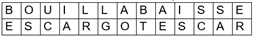 |
2. Puis on additionne les rangs des lettres dans chaque colonne :
1ère colonne : B + E = 2 + 5 = 7
2ème colonne : O + S = 15 + 19 = 34
3ème colonne : U + C = 21 + 3 = 24
Etc.
On obtient le résultat suivant :
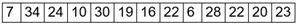 |
3. On peut enfin convertir chacun de ces nombres en lettres de l’alphabet (les nombres supérieurs à 26 sont au préalable diminués de 26 : 34 devient 8, 28 devient 2, etc.)
On obtient alors :
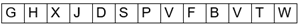 |
Le mot BOUILLABAISSE est maintenant chiffré en GHXJDSPVFBVTW. Il suffirait d’effectuer la démarche inverse pour le retrouver.
Remarques :
· Contrairement au chiffrement par substitution simple, un même élément peut se déchiffrer différemment selon la position qu’il occupe dans le texte chiffré. Par exemple, dans le texte chiffré GHXJDSPVFBVTW, la lettre V apparaît deux fois : une fois pour représenter la lettre B et une autre fois pour la lettre S. C’est pourquoi ce chiffrement est appelé « Substitution par position »
· Certains chiffrements Vigenères, au lieu d’effectuer une addition des rangs des lettres dans chaque colonne lors de l’étape 2, effectuent une soustraction. Le déchiffrement demandera donc d’effectuer l’opération opposée, c’est-à-dire une addition (ex : Le masque de Nefer – énigme 31)
· Contrairement au chiffrement par substitution simple, la clé ne peut pas être constituée de couleurs ou de symboles, mais d’éléments se prêtant aux additions / soustractions (nombres ou lettres par exemple)
Dans les chasses de Max, c’est essentiellement un chiffrement par substitution simple qui est utilisé, plutôt qu’un chiffrement Vigenère. Toutefois, dans Le masque de Nefer, le Chiffrement Vigenère apparaît au moins deux fois.
Un travail préalable doit parfois être réalisé pour obtenir la clé, ou encore le texte chiffré. De plus, la traduction de la clé n’est parfois pas immédiate et demande des manipulations avant d’obtenir le résultat. Enfin, le résultat une fois obtenu doit parfois être interprété…
Voici quelques exemples de chiffrements polyalphabétiques conçus par Max (ou tout au moins validés par lui lorsqu’il n’en était pas l’auteur).
Source : « Les chasses au trésor de Max Valentin 1.37.pdf par Ayrin »
https://www.lachouette.net/contrib/Airyn/Les_chasses_au_tresor_de_Max_Valentin.pdf
Légende : Les couleurs suivantes indiquent si la clé, le texte chiffré, la traduction, et l’interprétation sont directement fournies dans l’énoncé, ou ont demandé un traitement préalable:
|
Clé : |
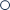 |
Traduction : |
Interprétation : |
· Clé1 : Rodez, Château-Thierry, Briançon, Châtellerault, Mulhouse
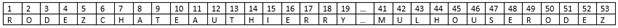 |
· Texte chiffré : 41, 4, 47, 12, 1, 48, 28, 52, 43, 38 15, 51, 38, 17, 45, 19
·
Traduction :
MESURE CELUI DU ROY
|
Clé : |
Texte chiffré : |
Traduction : |
Interprétation : |
· Clé2 :XUEYSELRUOPELBISIVNITSELEITNESSEL
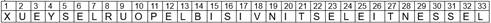 |
· Texte chiffré : 11, 10, 2, 8, 21, 23, 30, 4, 6, 9,1, 7, 12, 16, 21, 23, 30, 21, 24, 10, 2, 3, 5, 21
· Traduction : POUR TES YEUX L’EST EST L’OUEST
|
Clé : |
Texte chiffré : |
Traduction : |
Interprétation : |
· Clé3 : Boulogne, Compiègne, Moulins, Nantes, Quimper, Phare de Cordouan, Puy de Sancy, Laon
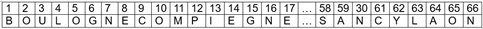 |
· Texte chiffré4 : 35, 47, 8, 66, 43, 58, 4, 57, 61, 17, 63, 8, 30, 61, 47, 42, 3, 39, 29, 34, 33, 15, 37, 22, 21, 58, 57, 30, 65, 7, 56, 36, 63, 14, 64, 50, 45, 39, 44, 41, 9, 39, 4, 8, 58, 43, 29, 30, 9, 57, 25, 56, 24, 36, 28, 20, 58, 63, 51, 58, 44, 61, 19, 66, 43, 57, 52, 13, 61, 39, 44, 40, 43, 47, 46, 33, 28, 36
· Traduction5 : PRENDS LE CHEMIN DE L’EAU. CHERCHE LES GRILLES. DESCENDS ET CREUSE SOUS LA SECONDE NICHE A DROITE.
|
Clé : |
Texte chiffré : |
Traduction : |
Interprétation : |
· Clé6 :…._..._ _ _ _..._......_ _ _
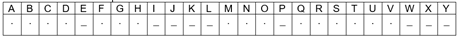
· Texte chiffré : ECOPAVICTORS * ELUCIDASLACUM * VEAFNUMSCLCAVUELIESURES * ARAEL * EX * FROCE
· Traduction : _.._.._.....*_ _.._..._....*._......._...._ _ _ _..._.*…__*__*…._
· Interprétation de la traduction7 : TERRES GASTES RESERVOIR 3M EST
|
Clé : |
Texte chiffré : |
Traduction : |
Interprétation : |
· Clé : Liste des Argonautes (Mélampous, Héracles, […], Méléagre)
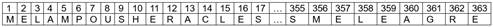 |
· Texte chiffré : 39-8-F-223-337-9-213-16-6-191-22-79-318-17-4-20-F-12-2-120-27-96-234-14-131-3-297-23-47-124-7-268-185-34-18-112-259-271-163-342. Lorsqu’il sera temps, il te faudra aller 54-126-92-203-144
· Traduction : DU FILS DE PELIAS AU FRERE DE CALAIS, TOUS EN ORDRE Lorsqu’il sera temps, il te faudra aller A L’EST
· Interprétation de la traduction8 : DU FILS DE PELIAS AU FRERE DE CALAIS, TOUS EN ORDRE Lorsqu’il sera temps, il te faudra aller AU SUD
|
Clé : |
Texte chiffré : |
Traduction : |
Interprétation : |
· Clé9 : 1906-1912-1917-1923-1934-1940-1945-1951-1962-1968-1973-1979-1990-1996
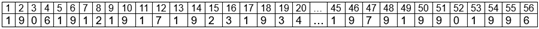 |
· Texte chiffré :10+12 / 24+5 / 9+14+15+49+36+20 / 24+44 / 32 / 8+36+43+32
· Traduction :16 / 1 / 19 / 3 / 1 / 12
· Interprétation de la traduction9 : PASCAL
|
Clé : |
Texte chiffré : |
Traduction : |
Interprétation : |
· Clé10 : Que j’aime à faire apprendre un nombre utile aux sages […]
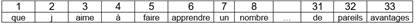 |
· Texte chiffré : 233, 139, 319, 281, 193, 251, 304, 183, 283, 312, 232, 158, 261, 133, 114, 197, 126, 67, 213, 103, 111, 304, 201, 181, 231, 305,85, 153, 192, 128, 157, 133, 305, 263, 11, 193, 275, 262, 162, 241, 156, 82, 143, 319.32, 94, 198, 147, 142, 194, 312, 127, 221, 202, 212, 101, 233, 131, 231, 305, 128, 275, 278, 66, 302, 204, 222, 94, 196, 138, 235, 81, 211, 69, 303, 115, 273, 152, 263, 141, 113, 234, 161, 282, 151, 316, 51, 253, 103, 154, 308, 311, 133, 221, 31, 236, 92, 318, 291, 102, 214, 252, 233, 34, 135, 94.171, 313, 197, 111, 94, 86, 155, 32, 317, 123, 292, 134, 203, 163, 315, 72, 231, 41, 12, 126, 312, 53, 152, 317, 146-133, 93, 314, 11, 231, 121, 216, 113, 243, 221, 13, 145, 144, 159, 153, 306, 124, 71, 63, 253, 182, 198, 307
· Traduction11 : LE SEGMENT VAUT CENT DIX SEPT VIRGULE CINQ GLOUPIOTS. IL TE REVELERA LA VILLE NATALE D’UN PERSONNAGE QUI A FIXE LA CLARTE DU SOLEIL. DANS L’ENIGME HUIT, N VAUT VINGT CINQ VIRGULE SIX GLOUPIOTS
· Interprétation de la traduction : Nicéphore Niepce
|
Clé : |
Texte chiffré : |
Traduction : |
Interprétation : |
· Clé12 : Zuben Elschernali, Zuben Elgenubi; Brachium, Zuben Elakrab
· Texte chiffré13 : 39-31-27-34-20-8-45-15
· Traduction : BABINSKI
|
Clé : |
Texte chiffré : |
Traduction : |
Interprétation : |
· Clé14 :Tennesse
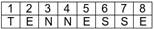 |
· Texte chiffré : 5+9, 7-14, 1+4, 2+15, 3+5, 4+6, 8+10, 6-3, 1-12, 7-4, 3-1, 3-9, 7+1, 1-5, 2+18, 6-5, 3+1, 4-8, 2+3, 6-14, 6+4, 7-11, 6-4, 2+13, 4+1, 4-13, 3+4, 4-9, 7-15, 1-11, 8+9, 3+6, 6-14, 8-1, 7-18, 5+13, 5+6
· Traduction15 : NEXT STOP HOME TOWN OF THE WHO ROARED IN THE DARK
· Interprétation de la traduction16 : MEMPHIS
|
Clé : |
Texte chiffré : |
Traduction : |
Interprétation : |
· Clé : Liste de villes (Buenos Aires, London, Berlin, Quebec, Midway, Paris, Tivoli, Detroit, Las Vegas, Toronto, Odessa, Oxford, Cambridge, Cardiff, San Marcos, Miami, Washington, Calgary, Heidelberg, Rugby, Freeport, Cadie, Milano, San Francisco, Praha, Kildare, Hereford, Atlanta, Dublin, Las Palmas, Manchester, Aberdeen)
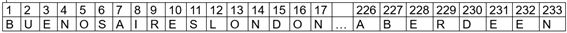 |
· Texte chiffré : « 174, 139, 41, 150, 177, 3, 30, 8, 233, 68, 9,15,185, 38. Starting from the place you have reached in riddle #27, 137, 161, 17, 148, 92, 67, 186, 26, 226, 209, 41 as far as possible.»
· Traduction : PUT THEM IN ORDER. Starting from the place you have reached in riddle #27, GO NORTH-EAST
· Interprétation de la traduction17, 18 : LOS ANGELES
|
Clé : |
Texte chiffré : |
Traduction : |
Interprétation : |
· Clé de Vigenère19 : KANTUTA
· Texte chiffré20 : H, N, P, O, T, G, K, J, L, U, T, N, U, S, G, D, E, V, F, X,D, C, S, Q, Y, N, Y, E, D, R, R, U, W, U, N, M, H, S, K, S, U, B, J, Z, F, X, T, V, Z, G, D, Z, Z, J, Y, H, H, C, A, Y, U, G, Q, T, M, F, K, X, O, R, D, W, U, M, J, T, N, W, H, P, X, T, M, D, C, N, B, G, W, K, M, I, D, E, O, X, I, T, P, S, D, U.
· Traduction21 : SODIO ALUMINIO TRES PARENTESIS FOSFORO OXIGENO CUATRO PARENTESIS DOS PARENTESIS OXIGENO HIDROGENO PARENTESIS CUATRO
· Interprétation de la traduction : NaAl3(PO4)2(OH)4 est la formule de la BRAZILIANITE
|
Clé : |
Texte crypté : |
Traduction : |
Interprétation : |
· Clé22 : Les premières lignes du livre XII de l’Enéide
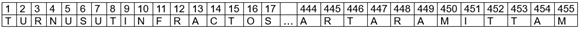 |
· Texte crypté : 147. 7. 96. * 58. 24. 6. 1. 60., * 68. 191. 92. 93. * 13. 25. 61. 9. 12. 31.3. 21. * 124. 33. 77. 115. 81. 110. 146. 121. * 188. 163. * 8. 10. 5. 23. 1.* 18. 3. 9. 22. 5. 26. 20., * 17. 231. 125. 95. 22. 101. 80. 280. * 104. 32.160. 198. 130. 155. * 127. 189. 106. 302. 35. 4. 201. 314. 272. 103. * 19.* 22. 1. 14. 5. 16. 26. 4. * 17. 14. * 8. 24. 19. 15. 5. 6., * 100. 65. 30. 138.143. 27. 203. * 19. 1. * 7. 16. 2. 19. 7. * 19. 19. 7. 25. 10. * 12. 7. 19. *24. 14. 19. 6. 20., * 206. 230. 140. 406. 472. 128. 132. 105. 240. 40. * 42.156. * 4. 22. 1. 14. * 21. 16. 6. 22. 6. 6. 13., * 358. 277. * 5. 19. 24. 2.23. 1. 3. 3. * 26. * 22. 17. * 6. 10. 6. 22. 20. 26. 11. * 19. 19. 17. 22. *25. 10. 4. 10. 22. 5. 10. * 4. 16. * 17. 22. 3. 14. 12. 16. 26. 26. * 17. 14.* 9. 10. 19. 14. 7.’ * 14. 11. 4. 26. 22. * 16. 14. 7. * 18. 22. 26. * 16. 10.10. 18. 22. 4. * 17. 6. * 50. 149. 10. 109. 131. * 117. 129. 200. 261. 113. *6. 4. 2. * 26. * 25. 20. 6. 9. 15. 9. 2. * 135. 5. 158. 51. 15. 173. * 166.278. 134. 120. 254. 16. * 169. 264. * 11. 204. 91. 142. 123. 144. 429. * 257. 157. * 151. 194. 402. 116. 14. 209.
· Traduction23 : SUL POSTO, PUOI AMMIRARE MIGLIAIA DI TNUST ARIRUAU, SCOPRIRE STRANI PERSONNAGI D RTCUOAN SC TODTUS, BALLARE DT UOUDU DDUMN RUD OCDSU, ASSAPORARE IL NRTC EOSRSSA, IL UDOUSTRR A RS SNSRUAF. DDSR MNNNRUN NO SRRCROAA SC INDCU’ CFNAR. OCU ARA ONNAR SS TANTO TEMPO SNU A MUSITIU. QUESTO NUMERO TI FORNIRA IL CODICE.
· Interprétation de la traduction : CAGLIARI
Le testament de Florence B (décembre 1996)
· #Note 1 : Il fallait relier les 5 villes (Rodez, Château Thierry, Briançon, Châtellerault, Mulhouse) selon une ligne brisée représentant une étoile à 5 branches et les ranger dans l’ordre du tracé afin d’obtenir une clé qui fonctionne.
Le trésor d’Orval (mars 1997) – premier billet
· #Note 2 : La clé était difficile à trouver parce que la phrase « L’essentiel est invisible pour les yeux » se trouvait incognito dans la partie narrative du livre, et n’était pas mentionnée comme faisant partie des outils de décryptage. Par ailleurs, il fallait écrire cette phrase de droite à gauche pour construire la grille de correspondance.
Le trésor d’Orval (mars 1997) – deuxième billet
· #Note 3 : A l’aide de la phrase « Utilise ton expérience. Sois alphabétique pour les cinq de tête, chronologique ensuite », il fallait déduire qu’il s’agissait de réunir les noms des lieux rencontrés jusqu’alors : les 5 premiers par ordre alphabétique (Boulogne, Compiègne, Moulins, Nantes et Quimper), et les trois derniers par ordre chronologique (Phare de Cordouan, Puy de Sancy et Laon). Les 5 premiers n’avaient pas été rencontrés nommément, mais ils avaient pu servir à la construction du triangle englobant les villes du périple de François 1er.
· #Note 4 : Le texte crypté n’était pas fourni tel qu’indiqué ci-dessus, car chaque nombre avait été augmenté de 7 unités (42, 54, 15, etc.). Cela était précisé assez clairement dans le texte de l’énigme malgré une confusion possible entre 7 et 8, mais une IS précisait que « 7 est mieux que 8 ».
· #Note 5 : Comme l’a démontré MarvinClay, il était possible de décoder la clé par tâtonnements en connaissant seulement les 5 premiers lieux (mais pas les 3 derniers).
Une histoire d’histoire (avril 1997)
· #Note 6 : La clé s’obtenait en additionnant toutes les années trouvées dans l’étape précédente. Le livre d’Ayrin ne précise pas si l’énigme comportait un indice suggérant d’effectuer une telle addition, ou s’il fallait simplement en avoir l’inspiration… On trouvait alors 43762 qui s’écrit en morse comme indiqué dans la grille de correspondance ci-dessus (…. – ... – – etc.)
· #Note 7 : Bien que le texte chiffré comporte des astérisques pour marquer la séparation entre les mots, il demeurait ardu d’interpréter la suite de signes morse (à titre d’exemple, le premier mot « _.._.._..... » peut se découper en lettres de 1490 façons différentes). Heureusement, une IS fournissait le patron de découpage : 1, 1, 3, 3, 1, 3 * 3, 2, 3, 1, 1, 3, * 3, 1, 3, 1, 3, 4, 3, 2, 3 * 5 * 2 * 1, 3, 1
Le trésor de Malbrouck (novembre 1998) – énigme 1
· #Note 8: La première partie de la traduction suggérait de ranger les noms par ordre alphabétique (« du fils de Pélias au frère de Calais » signifie « de Acaste à Zetes »). Il fallait alors créer une deuxième grille de correspondance respectant cette consigne, et comprendre que seule cette deuxième grille permettait de décoder la fin de la clé (54-126-92-203-144), qui donnait alors « AU SUD » et non plus « A L’EST ». Il s’agit là d’un surcodage puisqu’un premier décodage fournit une information pour un second décodage du même texte.
Victoria (février 2000) – énigme 5
· #Note 9 : Il fallait assembler toutes années du 20ème siècle commençant un lundi, sachant que le lundi 1er janvier 1900 était précisément un lundi. Le piège était que l’année 1900 n’appartient pas au 20ème siècle (c’est la dernière année du 19ème). Les chercheurs qui tombaient dans ce piège et construisaient une grille de correspondance qui démarrait en 1900 aboutissaient à un autre résultat : KEPLER
Victoria (février 2000) – énigme 7
· #Note 10 : Un texte assez alambiqué permettait de comprendre qu’il fallait tracer un cercle, et donc d’utiliser le nombre Pi. Il fallait alors penser à utiliser la célèbre phrase mnémotechnique « Que j’aime à faire apprendre un nombre utile aux sages etc. »
· #Note 11 : La difficulté de la traduction tenait dans l’utilisation particulière qu’il fallait faire des nombres de la clé : 233 signifiait « 23ème mot, 3ème lettre », 94 signifiait « 9ème mot, 4ème lettre, etc.
Victoria (février 2000) – énigme 9
· #Note 12 : Une balance Roberval devait faire penser à la constellation de la balance et ses 4 étoiles principales (Zuben Elschernali, Zuben Elgenubi, Brachium et Zuben Elakrab) . Deux indices complémentaires étaient fournis : la phrase « il faudrait être fou pour lutter contre elles » censée renvoyer à une citation de Charles Perrault évoquant les étoiles, et des petits symboles étoilés dispersés dans une grille.
· #Note 13 : Le texte chiffré était donné sous forme graphique : un tableau de 4 lignes correspondant aux 4 étoiles, repérées par une petite flèche au début de chaque ligne. Une ligne brisée sur le tableau, dont certaines cases colorées en noir devaient être ignorées, fournissait la solution BABINSKI
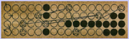 |
Le masque de Nefer (avril 2001) – énigme 25
· #Note 14 : La clé découlait de l’image suivante, représentant des horaires dont il fallait relever la ou les premières lettres des horaires en anglais 😬
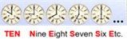 |
· #Note 15 : Le texte chiffré comportait des opérations arithmétiques qui devaient être utilisées de la façon suivante :
o le premier nombre devait être traduit directement via la grille de correspondance
o le deuxième nombre représentait un décalage dans l’alphabet
o ex : 5+9 signifie « prendre la 5ème lettre de la grille de correspondance (c’est-à-dire le E) puis la décaler de 9 rangs dans l’alphabet ». On tombe sur la lettre N.
· #Note 16 : Le zoo où vivait le lion du générique des films de la Metro Goldwyn Mayer se trouve à Memphis
Le masque de Nefer (avril 2001) – énigme 28
· #Note 17 : La première partie de la traduction suggérait de ranger les noms par ordre alphabétique (comme dans le Trésor de Malbrouck). Il fallait alors créer une deuxième grille de correspondance respectant cette consigne, et comprendre que seule cette deuxième grille permettait de décoder la fin de la clé (137, 161, 17, 148, 92, 67, 186, 26, 226, 209, 41), qui donnait alors « TSEWHTUOSOG » qui se lit de droite à gauche « GO SOUTH-WEST ». Il s’agit là d’un surcodage puisqu’un premier décodage fournit une information pour un second décodage du même texte.
· #Note 18 : Pour déduire que la solution était LOS ANGELES, il fallait remarquer que l’endroit où le chercheur se trouvait à ce moment (Adrian, Texas) était équidistant de Chicago et de Los-Angeles. Chicago se trouvait au nord-est, et Los Angeles au sud-ouest. Dès lors, « as far as possible » devait être interprété comme un choix à faire entre ces deux villes.
Le masque de Nefer (avril 2001) – énigme 31
· #
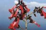
Note 19 : L’énigme précédente avait plus ou moins suggéré d’aller en Bolivie. Or Le visuel du mur faisait apparaître au premier plan la fleur-symbole de la nation bolivienne : la kantuta. Le chercheur était alors censé comprendre qu’il s’agissait de la clé de décryptage.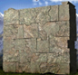
· #Note 20 : Le texte chiffré n’était pas fourni directement. Il fallait le construire en suivant les étapes suivantes :
o 26 briques de formes différentes, empilées en un mur, suggéraient de leur associer les 26 lettres de l’alphabet. Pour cela, il fallait partir de la brique en bas à gauche et terminer en haut à droite. 😬
o Le chercheur était dès lors en mesure de créer la table de correspondance suivante :
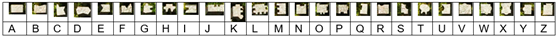 |
o Par ailleurs, un ensemble de briques étalées sur le sol avaient des formes qui rappelaient les 26 briques du mur.
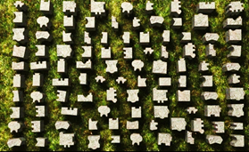 |
o Le chercheur avait alors en mains le texte à déchiffrer vu plus haut (H, N, P, O, T, G, etc.)
· #Note 21 : Le chercheur pouvait alors mettre en place un déchiffrement de Vigenère en superposant le texte chiffré et la clé KANTUKA (répétée autant de fois que nécessaire),
Il s’agissait ensuite d’ajouter les rangs alphabétiques des lettres de chaque colonne
H + K = 8 + 11 = 19 = S
N + A = 14 + 1 = 15 = O
P + N = 16 + 14 = 30. On retire 26 : 30 – 26 = 4 = D
Etc.
Le masque de Nefer (avril 2001) – énigme 45
· #Note 22: Différents éléments du visuel étaient censés suggérer le livre XII de l’Enéide : un texte en italiques, deux anneaux entrelacés (fusion entre latins et troyens), 12 livres numérotés, et la musique « La belle hélène » d’Offenbach.
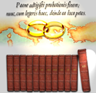 |
La grille de correspondance se construisait à partir des premières strophes du livre XII de l’Enéide :
Turnus ut infractos aduerso Marte Latinos
[…]
Aut hac Dardanium dextra sub Tartara mittam,
· #Note 23 : La traduction de premier niveau fournissait certains mots en italien, et d’autres mots dénués de sens (en rouge ci-dessous) :
SUL POSTO, PUOI AMMIRARE MIGLIAIA DI TNUST ARIRUAU, SCOPRIRE STRANI PERSONNAGI D RTCUOAN SC TODTUS, BALLARE DT UOUDU DDUMN RUD OCDSU, ASSAPORARE IL NRTC EOSRSSA, IL UDOUSTRR A RS SNSRUAF. DDSR MNNNRUN NO SRRCROAA SC INDCU’ CFNAR. OCU ARA ONNAR SS TANTO TEMPO SNU A MUSITIU. QUESTU NUMERO TI FORNIRA IL CODICE.
La dernière partie de cette traduction signifiait : « Ce numéro te fournira le code »
Il fallait alors comprendre que c’est le mot « NUMERO » lui-même qui devait être utilisé pour décoder correctement les mots incompréhensibles.
Le chercheur pouvait alors mettre en place un déchiffrement de Vigenère en assemblant les blocs dénués de sens et en les superposant à la clé NUMERO (répétée autant de fois que nécessaire).
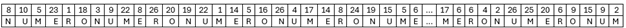 |
Il s’agissait alors d’effectuer un déchiffrage Vigenère, c’est-à-dire de soustraire le rang alphabétique des lettres de la deuxième ligne aux nombres de la première ligne.
8 – N = 8 – 14 = – 6. On ajoute 26 : – 6 + 26 = 20 = T
10 – U = 10 – 21 = – 11. On ajoute 26 : – 11 + 26 = 15 = O
5 – M = 5 – 13 = – 8. On ajoute 26 : – 8 + 26 = 16 = R
Etc.
Le texte final donnait ensuite : «Sul posto, puoi ammirare migliaia di torri coniche, scoprire strani personnagi e animali di pietra, ballare al suono delle tre canne, assaporare il pani carasau, il pecorino e il Nuragus. Devi trovare la capitale di quest’ isola. Ciò che cerchi da tanto tempo non è lontano. Questu numero ti fornirà il codice.»
Traduction : Sur place, tu peux admirer des milliers de tours coniques, découvrir d’étranges personnages et animaux en pierre, danser au son de trois tubes de roseaux, te régaler de « pani carasau », de « pecorino » et de « Noragus ». Tu dois trouver la capitale de cette île. Ce que tu cherches depuis si longtemps n’est pas loin. Ce numéro te fournira le code.